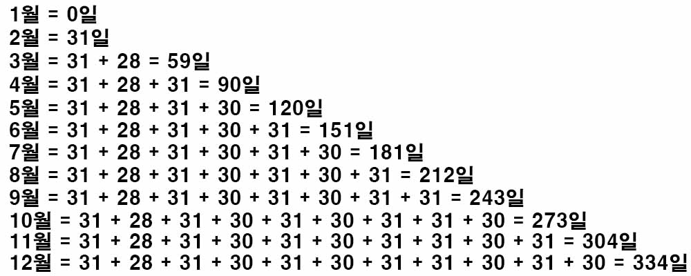

백준 1924. 2007년
- https://www.acmicpc.net/problem/1924
-
문제 :
오늘은 2007년 1월 1일 월요일이다. 그렇다면 2007년 x월 y일은 무슨 요일일까? 이를 알아내는 프로그램을 작성하시오. -
입력 :
첫째 줄에 빈 칸을 사이에 두고 x(1 ≤ x ≤ 12)와 y(1 ≤ y ≤ 31)이 주어진다. 참고로 2007년에는 1, 3, 5, 7, 8, 10, 12월은 31일까지, 4, 6, 9, 11월은 30일까지, 2월은 28일까지 있다. -
출력 :
첫째 줄에 x월 y일이 무슨 요일인지에 따라 SUN, MON, TUE, WED, THU, FRI, SAT중 하나를 출력한다. -
풀이 :
월을 일 수로 계산한다면 다음과 같다.

1월은 일 수가 지나지 않았으므로 0일로 계산된다.
2월은 1월이 지나야 온다. 1월은 31일이니까 즉, 31일로 계산된다.
3월은 1월과 2월이 지나야 오므로 1월은 31일, 2월은 28일이니까 59일로 계산된다.
이런 식으로 12월까지 계산한다.
이 계산을 바탕으로 입력받은 데이터를 일 수로 바꿀 수 있다.
1 1 (1월 1일) = 0 + 1 = 1
3 14 (3월 14일) = 59 + 14 = 73
9 2 (9월 2일) = 243 + 2 = 245
12 25 (9월 25일) = 334 + 25 = 359
일주일은 7일이므로 구한 값을 7로 나눈 나머지 값을 통해 무슨 요일인지를 알아날 수 있다.
1월 1일이 월요일이므로
나머지 값이 0일 경우 일요일
나머지 값이 1일 경우 월요일
나머지 값이 2일 경우 화요일
나머지 값이 3일 경우 수요일
나머지 값이 4일 경우 목요일
나머지 값이 5일 경우 금요일
나머지 값이 6일 경우 토요일
1 1 (1월 1일) / 1 % 7 = 1 / 월요일
3 14 (3월 14일) / 73 % 7 = 3 / 수요일
9 2 (9월 2일) / 245 % 7 = 0 / 일요일
12 25 (9월 25일) / 359 % 7 = 2 / 화요일